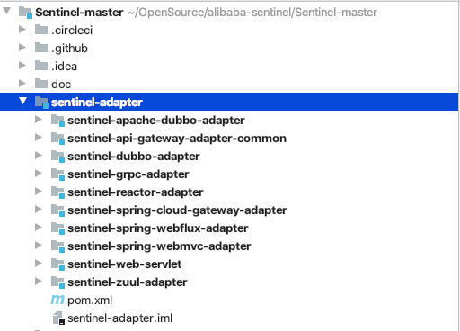
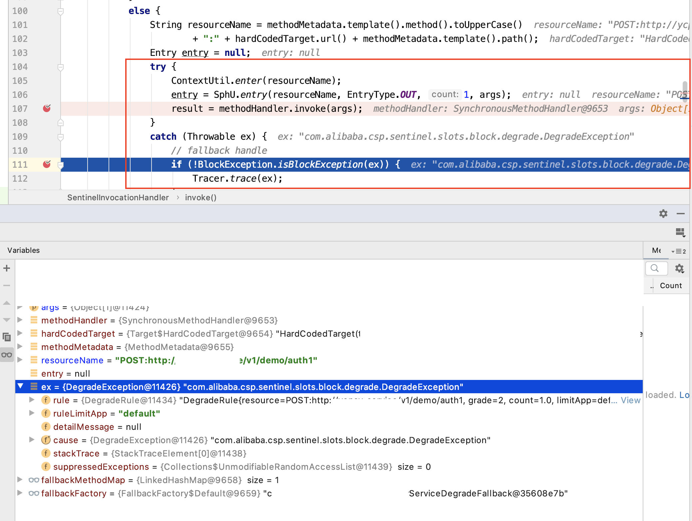

- 01 开篇词：一次服务雪崩问题排查经历.md.html
- 02 为什么需要服务降级以及常见的几种降级方式.md.html
- 03 为什么选择 Sentinel，Sentinel 与 Hystrix 的对比.md.html
- 04 Sentinel 基于滑动窗口的实时指标数据统计.md.html
- 05 Sentinel 的一些概念与核心类介绍.md.html
- 06 Sentinel 中的责任链模式与 Sentinel 的整体工作流程.md.html
- 07 Java SPI 及 SPI 在 Sentinel 中的应用.md.html
- 08 资源指标数据统计的实现全解析（上）.md.html
- 09 资源指标数据统计的实现全解析（下）.md.html
- 10 限流降级与流量效果控制器（上）.md.html
- 11 限流降级与流量效果控制器（中）.md.html
- 12 限流降级与流量效果控制器（下）.md.html
- 13 熔断降级与系统自适应限流.md.html
- 14 黑白名单限流与热点参数限流.md.html
- 15 自定义 ProcessorSlot 实现开关降级.md.html
- 16 Sentinel 动态数据源：规则动态配置.md.html
- 17 Sentinel 主流框架适配.md.html
- 18 Sentinel 集群限流的实现（上）.md.html
- 19 Sentinel 集群限流的实现（下）.md.html
- 20 结束语：Sentinel 对应用的性能影响如何？.md.html
- 21 番外篇：Sentinel 1.8.0 熔断降级新特性解读.md.html
17 Sentinel 主流框架适配
使用 Sentinel 需要用 try-catch-finally 将需要保护的资源（方法或者代码块）包装起来，在目标方法或者代码块执行之前，调用 ContextUtil#enter 方法以及 SphU#entry 方法，在抛出异常时，如果非 BlockException 异常需要调用 Tracer#trace 记录异常，修改异常指标数据，在 finally 中需要调用 Entry#exit 方法，以及 ContextUtil#exit 方法。
为了节省这些步骤，Sentinel 提供了对主流框架的适配，如适配 Spring MVC、Webflux、Dubbo、Api Gateway 等框架。当然，对于 Sentinel 未适配的框架，我们也可以自己实现适配器。在 Sentinel 源码之外，alibaba 的 spring-cloud-starter-alibaba-sentinel 也为 Sentinel 提供与 OpenFeign 框架整合的支持。

Spring MVC 适配器
Sentinel 借助 Spring MVC 框架的 HandlerInterceptor 适配 Spring MVC，但也需要我们借助 WebMvcConfigurer 将 SentinelWebInterceptor 注册到 Spring MVC 框架。
使用步骤
第一步：在项目中添加 Spring MVC 适配模块的依赖。
<dependency>
<groupId>com.alibaba.csp</groupId>
<artifactId>sentinel-spring-webmvc-adapter</artifactId>
<version>${version}</version>
</dependency>
第二步：编写 WebMvcConfigurer，在 addInterceptors 方法中注入 SentinelWebInterceptor。
@Configuration
public class InterceptorConfig implements WebMvcConfigurer {
@Override
public void addInterceptors(InterceptorRegistry registry) {
SentinelWebMvcConfig config = new SentinelWebMvcConfig();
config.setBlockExceptionHandler(new DefaultBlockExceptionHandler());
config.setHttpMethodSpecify(true);
config.setOriginParser(request -> request.getHeader("S-user"));
// SentinelWebInterceptor 拦截所有接口（"/**"）
registry.addInterceptor(new SentinelWebInterceptor(config)).addPathPatterns("/**");
}
}
在创建 SentinelWebInterceptor 时，可为 SentinelWebInterceptor 添加配置，使用 SentinelWebMvcConfig 封装这些配置：
- setBlockExceptionHandler：配置 BlockException 异常处理器，如果不想配置 BlockException 异常处理器，也可在 Spring MVC 的全局异常处理器中处理 BlockException 异常。
- setOriginParser：注册调用来源（origin）解析器，例如从请求头中获取“S-user”参数的值作为调用来源名称，上游服务在发起请求时就可在请求头写入“S-user”参数告知自己的身份。
- setHttpMethodSpecify：是否需要给资源名称加上 HttpMethod 前缀，例如 GET 接口“/hello”，如果 httpMethodSpecify 配置为 false，则资源名称为“/hello”，否则资源名称为“GET:/hell”。
适配原理
Spring MVC 框架的方法拦截器（HandlerInterceptor）的定义如下：
public interface HandlerInterceptor {
default boolean preHandle(HttpServletRequest request, HttpServletResponse response, Object handler) throws Exception {
return true;
}
default void postHandle(HttpServletRequest request, HttpServletResponse response, Object handler, @Nullable ModelAndView modelAndView) throws Exception {
}
default void afterCompletion(HttpServletRequest request, HttpServletResponse response, Object handler, @Nullable Exception ex) throws Exception {
}
}
HandlerInterceptor 在 DispatcherServlet#doDispatch 方法中被调用，每个方法的调用时机如下：
- preHandle：在调用接口方法之前调用
- postHandle：在接口方法执行完成返回 ModelAndView 时被调用；
- afterCompletion：在接口方法执行完成时被调用，无论成功或异常都会被调用；
因此，Sentinel 可借助 HandlerInterceptor 与 Spring MVC 框架整合，在 HandlerInterceptor#preHandle 方法中调用 ContextUtil#enter 方法以及 SphU#entry 方法，在 afterCompletion 方法中根据方法参数 ex 是否为空处理异常情况，并且完成 Entry#exit 方法、ContextUtil#exit 方法的调用。
SentinelWebInterceptor 是 AbstractSentinelInterceptor 的子类，preHandle 与 afterCompletion 方法在父类中实现，自身只实现父类定义的一个获取资源名称的抽象方法，其源码如下：
@Override
protected String getResourceName(HttpServletRequest request) {
// （1）
Object resourceNameObject = request.getAttribute(HandlerMapping.BEST_MATCHING_PATTERN_ATTRIBUTE);
if (resourceNameObject == null || !(resourceNameObject instanceof String)) {
return null;
}
String resourceName = (String) resourceNameObject;
// （2）
UrlCleaner urlCleaner = config.getUrlCleaner();
if (urlCleaner != null) {
resourceName = urlCleaner.clean(resourceName);
}
// （3）
if (StringUtil.isNotEmpty(resourceName) && config.isHttpMethodSpecify()) {
resourceName = request.getMethod().toUpperCase() + ":" + resourceName;
}
return resourceName;
}
资源名称生成过程如下。
\1. 从 HttpServletRequest 的属性中获取 HandlerMapping 匹配的 URL。
因为有些接口是这样的：“/hello/{name}”，如果直接从 HttpServletRequest 获取请求路径，那么每个请求获取到的 URL 就可能会不同。
\2. 如果 UrlCleaner 不为空，则调用 UrlCleaner 的 clean 方法。
UrlCleaner 用于实现将多个接口合并为一个，例如接口：“/user/create”、“/user/del”、“/user/update”，借助 UrlCleaner 修改资源名称将这几个接口都改为“/user/**”即可实现三个接口使用同一个限流规则。
\3. 根据 SentinelWebMvcConfig 配置对象判断是否需要添加 HttpMethod 前缀，如果需要则给资源名称拼接前缀。
一般来说，不建议使用，因为如果接口使用 @RequestMapping 声明，那么想对该接口限流就需要配置多个限流规则，而一般旧项目多是使用 @RequestMapping 声明接口方法。例如接口“/user/create”，你可能需要针对“GET:/user/create”、“POST:/user/create”等多个资源配置限流规则。
由于 AbstractSentinelInterceptor 的源码较多，我们分几个步骤分析。
AbstractSentinelInterceptor#preHandle 方法源码如下：
@Override
public boolean preHandle(HttpServletRequest request, HttpServletResponse response, Object handler)
throws Exception {
try {
//（1）
String resourceName = getResourceName(request);
if (StringUtil.isNotEmpty(resourceName)) {
//（2）
String origin = parseOrigin(request);
//（3）
ContextUtil.enter(SENTINEL_SPRING_WEB_CONTEXT_NAME, origin);
//（4）
Entry entry = SphU.entry(resourceName, ResourceTypeConstants.COMMON_WEB, EntryType.IN);
//（5）
setEntryInRequest(request, baseWebMvcConfig.getRequestAttributeName(), entry);
}
return true;
} catch (BlockException e) {
// （6）
handleBlockException(request, response, e);
return false;
}
}
- 获取资源名称；
- 调用 OriginParser#parseOrigin 方法解析调用来源，例如从请求头获取"S-user"参数的值；
- 调用 ContextUtil#enter 方法，Context 名称为“sentinel_spring_web_context”；
- 调用 SphU#entry 方法，资源类型为 COMMON_WEB，流量类型为 IN；
- 将 SphU#entry 方法返回的 Entry 放入 HttpServletRequest 的属性表中，方便在 afterCompletion 中取出；
- 如果抛出 BlockException 异常，说明当前请求被拒绝，需调用 handleBlockException 方法处理 BlockException 异常。
AbstractSentinelInterceptor#handleBlockException 方法源码如下：
protected void handleBlockException(HttpServletRequest request, HttpServletResponse response, BlockException e)
throws Exception {
if (baseWebMvcConfig.getBlockExceptionHandler() != null) {
baseWebMvcConfig.getBlockExceptionHandler().handle(request, response, e);
} else {
throw e;
}
}
如果我们给 SentinelWebMvcConfig 配置了 BlockExceptionHandler，则调用 BlockExceptionHandler#handle 方法处理 BlockException 异常，否则将异常抛出，由全局处理器处理。
AbstractSentinelInterceptor#afterCompletion 方法源码如下：
@Override
public void afterCompletion(HttpServletRequest request, HttpServletResponse response,
Object handler, Exception ex) throws Exception {
//（1）
Entry entry = getEntryInRequest(request, baseWebMvcConfig.getRequestAttributeName());
if (entry != null) {
//（2）
traceExceptionAndExit(entry, ex);
removeEntryInRequest(request);
}
//（3）
ContextUtil.exit();
}
- 从 HttpServletRequest 的属性表中获取 preHandle 方法放入的 Entry；
- 调用 traceExceptionAndExit 方法，记录异常和调用 Entry#exit 方法；
- 调用 ContextUtil#exit 方法，如果当前 CtEntry 为空，则从 ThreadLocal 中移除 Context。
AbstractSentinelInterceptor#traceExceptionAndExit 方法源码如下：
protected void traceExceptionAndExit(Entry entry, Exception ex) {
if (entry != null) {
if (ex != null) {
Tracer.traceEntry(ex, entry);
}
entry.exit();
}
}
当方法执行抛出异常时，调用 Tracer#traceEntry 方法记录异常，更新异常指标数据。
OpenFeign 适配器
Sentinel 整合 OpenFeign 主要用于实现熔断降级，因此，关于 OpenFeign 的 Sentinel 适配器的使用介绍基于服务消费端。
使用步骤
1. 引入依赖
借助 spring-cloud-starter-alibaba-sentinel 实现与 OpenFeign 整合，添加依赖配置如下：
<dependency>
<groupId>com.alibaba.cloud</groupId>
<artifactId>spring-cloud-starter-alibaba-sentinel</artifactId>
<version>2.2.1.RELEASE</version>
</dependency>
2. 启用 OpenFeign 整合 Sentinel 的自动配置
在 application.yaml 配置文件中添加如下配置，启用 Sentinel 与 OpenFeign 整合适配器。
feign:
sentinel:
enabled: true
3. 熔断降级规则配置
可基于动态数据源实现，也可直接调用 DegradeRuleManager 的 loadRules API 硬编码实现，可参考上一篇。
4. 给 @FeignClient 注解配置异常回调
给接口上的 @FeignClient 注解配置 fallback 属性，实现请求被拒绝后的处理。
@FeignClient(
//.....
// 这里配置
fallback = ServiceDegradeFallback.class)
public interface DemoService {
@PostMapping("/services")
ListGenericResponse<DemoDto> getServices();
}
fallback 属性要求配置一个类，该类必须实现相同的接口，所以 ServiceDegradeFallback 必须实现 DemoService 接口。
public class ServiceDegradeFallback implements DemoService {
@Override
public ListGenericResponse<DemoDto> getServices() {
ListGenericResponse response = new ListGenericResponse<DemoDto>();
response.setCode(ResultCode.SERVICE_DEGRAD.getCode())
.setMessage("服务降级");
return response;
}
}
ServiceDegradeFallback 类中处理接口降级逻辑，例如，响应一个状态码告知消费端由于服务降级本次接口调用失败。
最后还需要将该 ServiceDegradeFallback 注册到 Feign 的 Clinet 环境隔离的容器中。
编写配置类 SentinelFeignConfig，在 SentinelFeignConfig 中注册 ServiceDegradeFallback。
public class SentinelFeignConfig {
@Bean
public ServiceDegradeFallback degradeMockYcpayService() {
return new ServiceDegradeFallback();
}
}
将 SentinelFeignConfig 配置类添加到 @FeignClient 注解的 configuration 属性，如下：
@FeignClient(
// .....
configuration = {
// 这里配置
SentinelFeignConfig.class
},
// 这里配置
fallback = ServiceDegradeFallback.class)
public interface DemoService {
@PostMapping("/services")
ListGenericResponse<DemoDto> getServices();
}
当满足熔断条件时，Sentinel 会抛出一个 DegradeException 异常，如果配置了 fallback，那么 Sentinel 会从 Bean 工厂中根据 fallback 属性配置的类型取一个 Bean 并调用接口方法。
Sentinel 与 OpenFeign 整合实现原理
当 Sentinel 与 OpenFeign、Ribbon 整合时，客户端向服务端发起一次请求的过程如下图所示。
- 当调用@FeignClient 接口的方法时，由 Sentinel 提供的方法调用拦截器（SentinelInvocationHandler）拦截方法的执行，根据接口方法上注解的 url 生成资源名称，然后调用 Sentinel 的 SphU#entry 方法（完成所有 ProcessorSlot#entry 方法的调用），判断当前发起的请求是否需要熔断；
- 非熔断降级情况下，继续将请求交给 OpenFeign 的 MethodHandler 处理；
- OpenFeign 从 Ribbon 获取一个服务提供者节点；
- OpenFeign 使用 HttpClient 发起 HTTP 请求；
- OpenFeign 请求成功或者异常（已经经过重试）时，调用 Sentinel 的 Entry#exit 方法（完成所有 ProcessorSlot#exit 方法的调用）更新当前时间窗口的请求成功总数、异常总数等指标数据。
可见，Sentinel 处在接口调用的最前端，因此 Sentinel 统计的指标数据即不会受 Ribbon 的重试影响也不会受 OpenFeign 的重试影响。
Sentinel 通过自己提供 InvocationHandler 替换 OpenFeign 的 InvocationHandler 实现请求拦截。SentinelInvocationHandler 源码调试如下图所示。

InvocationHandler 是 OpenFeign 为接口生成 JDK 动态代理类时所需要的，是接口的方法拦截处理器，Sentinel 通过替换 OpenFeign 的 InvocationHandler 拦截方法的执行，在 OpenFeign 处理接口调用之前完成熔断降级的检查。
那么，Sentinel 是如何将原本的 FeignInvocationHandler 替换为 SentinelInvocationHandler 的呢？
OpenFeign 通过 Feign.Builder 类创建接口的代理类，所以 Sentinel 直接将 Feign.Builder 也替换成了 SentinelFeign.Builder，由 SentinelFeignAutoConfiguration 自动配置类向 Spring 的 Bean 容器注入 SentinelFeign.Builder，代码如下：
@Configuration(proxyBeanMethods = false)
@ConditionalOnClass({ SphU.class, Feign.class })
public class SentinelFeignAutoConfiguration {
@Bean
@Scope("prototype")
@ConditionalOnMissingBean
@ConditionalOnProperty(name = "feign.sentinel.enabled")
public Feign.Builder feignSentinelBuilder() {
return SentinelFeign.builder();
}
}
SentinelFeign.Builder 继承 Feign.Builder 并重写 build 方法，SentinelFeign.Builder#build 方法源码如下：
public final class SentinelFeign {
public static Builder builder() {
return new Builder();
}
public static final class Builder extends Feign.Builder
implements ApplicationContextAware {
// .....
@Override
public Feign build() {
super.invocationHandlerFactory(new InvocationHandlerFactory() {
@Override
public InvocationHandler create(Target target,
Map<Method, MethodHandler> dispatch) {
// 创建 SentinelInvocationHandler
}
});
super.contract(new SentinelContractHolder(contract));
return super.build();
}
// .....
}
}
SentinelFeign.Builder#build 偷天换日，替换了 InvocationHandlerFactory，所以 OpenFeign 调用 InvocationHandlerFactory#create 方法创建的 InvocationHandler 就变成了 SentinelInvocationHandler。
看 InvocationHandlerFactory#create 方法的返回值类型我们也能知道，该方法负责创建 SentinelInvocationHandler。create 方法部分源码如下：
Class fallback = (Class) getFieldValue(feignClientFactoryBean,
"fallback");
Object fallbackInstance = getFromContext(beanName, "fallback", fallback,
target.type());
return new SentinelInvocationHandler(target, dispatch,
new FallbackFactory.Default(fallbackInstance));
在创建 SentinelInvocationHandler 之前，通过反射从 FeignClientFactoryBean 拿到 @FeignClient 注解的 fallback 属性值，然后根据 fallback 类型从 Bean 工厂取得 fallback 实例，将 fallback 实例传递给 SentinelInvocationHandler。当触发熔断时，SentinelInvocationHandler 就能取得 fallback 实例并调用。
总结
本篇我们分析了 Sentinel 适配 Spring MVC 框架的实现原理，以及 Sentinel 适配 Spring Cloud OpenFeign 框架的实现原理。适配各种主流框架，无非就是通过框架提供的方法拦截器注入 Sentinel，或者通过拦截主流框架的入口方法注入 Sentinel。了解原理之后，如果我们项目中使用的框架 Sentinel 并未适配，那么我们也可以自己实现适配器。